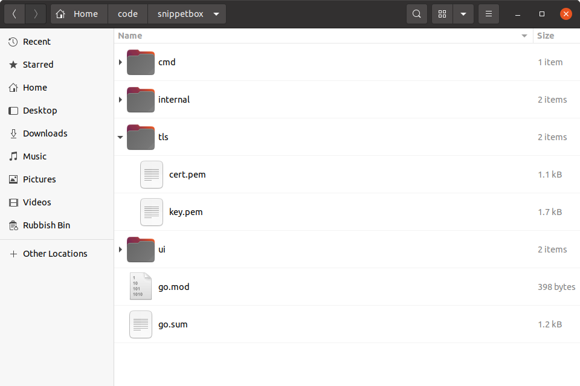

تولید یک گواهی TLS خودامضا (Generating a Self-Signed TLS Certificate)
در این بخش، نحوه تولید یک گواهی TLS خودامضا (Self-Signed TLS Certificate) را بررسی میکنیم. این گواهی برای رمزنگاری (Encryption) و امنیت ارتباطات (Communication Security) استفاده میشود.
برای شروع، بیایید یک جفت کلید (Key Pair) شامل کلید خصوصی (Private Key) و گواهی عمومی (Public Certificate) ایجاد کنیم:
بیایید توجه خود را به استفاده از HTTPS (به جای HTTP ساده) برای همه درخواستها و پاسخها در برنامه خود معطوف کنیم.
HTTPS اساساً HTTP است که از طریق یک اتصال TLS (امنیت لایه حمل و نقل) ارسال میشود. مزیت این کار این است که ترافیک HTTPS رمزگذاری و امضا میشود، که به حفظ حریم خصوصی و یکپارچگی آن در حین انتقال کمک میکند.
قبل از اینکه سرور ما بتواند از HTTPS استفاده کند، باید یک گواهی TLS تولید کنیم.
برای سرورهای تولیدی، توصیه میکنم از Let's Encrypt برای ایجاد گواهیهای TLS خود استفاده کنید، اما برای اهداف توسعه، سادهترین کار این است که یک گواهی خودامضا تولید کنید.
یک گواهی خودامضا همانند یک گواهی TLS معمولی است، به جز اینکه به صورت رمزنگاری توسط یک مرجع گواهی معتبر امضا نشده است. این بدان معناست که مرورگر وب شما در اولین استفاده از آن هشدار میدهد، اما با این حال ترافیک HTTPS را به درستی رمزگذاری میکند و برای اهداف توسعه و آزمایش مناسب است.
خوشبختانه، بسته crypto/tls در کتابخانه استاندارد Go شامل یک ابزار generate_cert.go است که میتوانیم از آن برای ایجاد آسان گواهی خودامضا استفاده کنیم.
اگر در حال دنبال کردن هستید، ابتدا یک دایرکتوری جدید به نام tls در ریشه مخزن پروژه خود ایجاد کنید تا گواهی را نگه دارد و به آن تغییر مکان دهید:
$ cd $HOME/code/snippetbox $ mkdir tls $ cd tls
برای اجرای ابزار generate_cert.go، باید مکان نصب کد منبع کتابخانه استاندارد Go را در رایانه خود بدانید. اگر از لینوکس، macOS یا FreeBSD استفاده میکنید و دستورالعملهای نصب رسمی را دنبال کردهاید، فایل generate_cert.go باید در مسیر /usr/local/go/src/crypto/tls قرار داشته باشد.
اگر از macOS استفاده میکنید و Go را با استفاده از Homebrew نصب کردهاید، فایل احتمالاً در مسیر /usr/local/Cellar/go/<version>/libexec/src/crypto/tls/generate_cert.go یا مسیری مشابه قرار دارد.
پس از اینکه مکان آن را پیدا کردید، میتوانید ابزار generate_cert.go را به این صورت اجرا کنید:
$ go run /usr/local/go/src/crypto/tls/generate_cert.go --rsa-bits=2048 --host=localhost 2024/03/18 11:29:23 wrote cert.pem 2024/03/18 11:29:23 wrote key.pem
در پشت صحنه، این دستور generate_cert.go در دو مرحله کار میکند:
ابتدا یک جفت کلید RSA 2048 بیتی تولید میکند، که یک کلید عمومی و کلید خصوصی به صورت رمزنگاری امن است.
سپس کلید خصوصی را در یک فایل
key.pemذخیره میکند و یک گواهی TLS خودامضا برای میزبانlocalhostتولید میکند که شامل کلید عمومی است — که آن را در یک فایلcert.pemذخیره میکند. هم کلید خصوصی و هم گواهی به صورت PEM کدگذاری شدهاند، که فرمت استاندارد استفاده شده توسط اکثر پیادهسازیهای TLS است.
مخزن پروژه شما اکنون باید چیزی شبیه به این باشد:

و این تمام است! ما اکنون یک گواهی TLS خودامضا (و کلید خصوصی مربوطه) داریم که میتوانیم در طول توسعه استفاده کنیم.
اطلاعات اضافی
ابزار mkcert
به عنوان جایگزینی برای ابزار generate_cert.go، ممکن است بخواهید از mkcert برای تولید گواهیهای TLS استفاده کنید. اگرچه این کار نیاز به تنظیمات اضافی دارد، اما این مزیت را دارد که گواهیهای تولید شده به صورت محلی معتبر هستند — به این معنی که میتوانید از آنها برای آزمایش و توسعه بدون دریافت هشدارهای امنیتی در مرورگر وب خود استفاده کنید.
واژهنامه اصطلاحات فنی (Technical Glossary)
| اصطلاح فارسی | معادل انگلیسی | توضیح |
|---|---|---|
| گواهی TLS خودامضا | Self-Signed TLS Certificate | گواهی امنیتی تولید شده توسط خود |
| رمزنگاری | Encryption | کدگذاری اطلاعات برای امنیت |
| امنیت ارتباطات | Communication Security | حفاظت از تبادل اطلاعات |
| جفت کلید | Key Pair | زوج کلید خصوصی و عمومی |
| کلید خصوصی | Private Key | کلید محرمانه برای رمزگشایی |
| گواهی عمومی | Public Certificate | گواهی قابل اشتراک با دیگران |
| الگوریتم رمزنگاری | Encryption Algorithm | روش رمزگذاری دادهها |
| امضای دیجیتال | Digital Signature | تأیید اصالت دیجیتال |
| مرجع صدور گواهی | Certificate Authority | نهاد صادرکننده گواهی |
| اعتبارسنجی گواهی | Certificate Validation | بررسی صحت گواهی |